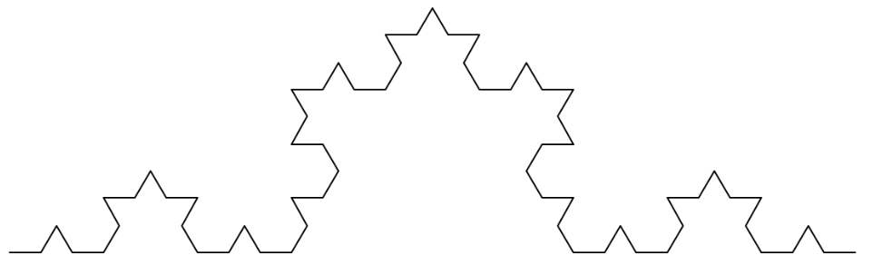
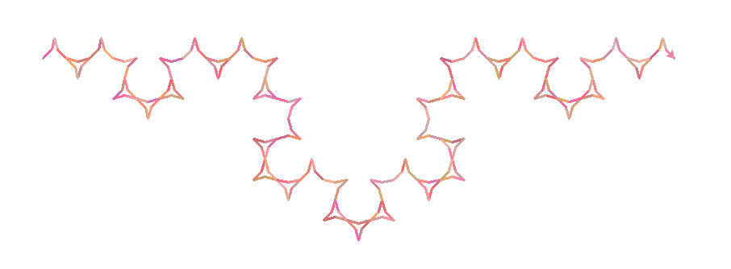
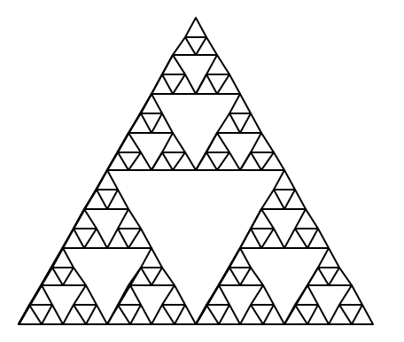
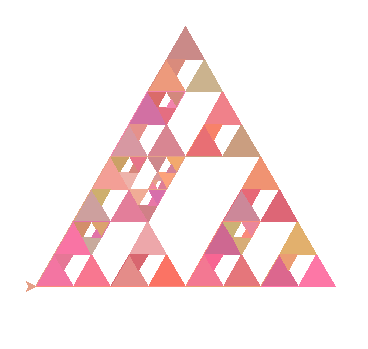
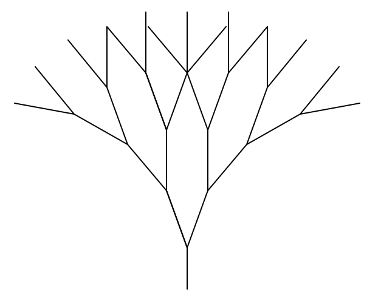
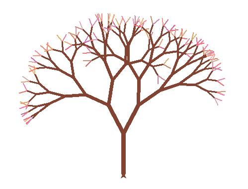

This is the basic Koch Curve original_koch_curve(t, 4, 20)

My Koch Curve will change the turtle's color to a random pinkish color everytime it moves forward and the angles are now 30 and 150 instead of 60 and 120. Here's what draw_koch(t, 5, 15) looks like:

def draw_koch(t, depth, length):
t.pd()
if(depth==1):
t.color(randint(200, 255),
randint(100, 180),
randint(100, 180))
t.fd(length)
else:
draw_koch(t, depth-1, length)
t.lt(30)
draw_koch(t, depth-1, length)
t.rt(150)
draw_koch(t, depth-1, length)
t.lt(30)
draw_koch(t, depth-1, length)
This is the basic Sierpinski Triangle original_draw_sierpinski(t, 5, 200)

My Sierpinski will change the turtle's pen color to a random pinkish color everytime it draws a new triangle and fills the triangle with that color. Additionally, with every recursive call, it will draw another Sierpinski Triangle of the previous depth (rotated 60 degress to the left) inside the previously empty triangle. Here's the result of draw_sierpinski(t, 4, 300):

def draw_sierpinski(t, depth, length):
if (depth == 1):
color = (randint(200, 255),
randint(100, 180),
randint(100, 180))
t.fillcolor(color)
t.pencolor(color)
t.begin_fill()
t.lt(60)
t.fd(length)
t.rt(120)
t.fd(length)
t.rt(120)
t.fd(length)
t.rt(180)
t.end_fill()
else:
draw_sierpinski(t, depth-1, length/2)
t.fd(length/2)
draw_sierpinski(t, depth-1, length/2)
t.bk(length/2)
t.lt(60)
t.fd(length/2)
t.rt(60)
draw_sierpinski(t, depth-1, length/2)
t.fd(length/4)
t.rt(180)
draw_sierpinski(t, depth-1, length/4)
t.fd(length/4)
t.lt(60)
t.fd(length/2)
t.lt(120)
This is the basic Tree original_tree(t, 4, 50, 20)

My Tree will change the turtle's color to a random pinkish color at the last level of the tree and the the width and length decrease with every recursive call. The angle is also randomized. Here's what tree(t, 8, 80, 20, 9) displays:

def tree(t, depth, length, angle, width):
t.width(width)
if(depth==1):
t.color(randint(200, 255),
randint(100, 180),
randint(100, 180))
t.fd(length)
t.back(length)
t.color(131, 67, 51)
else:
t.color(131, 67, 51)
angle += random.randrange(-10, 10)
t.fd(length)
t.lt(angle)
tree(t, depth-1, length*0.8, angle, width-1)
t.rt(2*angle)
tree(t, depth-1, length*0.8, angle, width-1)
t.lt(angle)
t.bk(length)